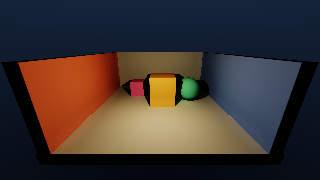
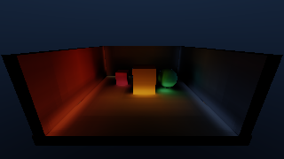

01交互 DAG
六 Pass / 八条数据边
点击任意节点，检查其输入、输出、dispatch/draw 和源入口。
GI.01 Voxelize Analytic Scene
csVoxelize
读取当前帧点光源 + 解析 SDF 场景
写入Voxel L0 · 32³ RGBA16F
为什么存在把世界表面、直接光和 opacity 写进统一体素域。
验收点每帧完整 dispatch；不读取上一帧 volume。
这个 Lab 已直接扩展 F:\RenderGraph：32³ Texture3D 当前帧体素化、三层独立 Volume LOD、五锥 diffuse gather、HDR Resolve 与 Present。D3D12 和 Vulkan 使用同一份 C++ RenderGraph 与 HLSL；验证帧从 GPU readback 得到，不是网页模拟图。
两张图由 08_gi_workbench.exe --validate 的 D3D12 GPU readback 生成：第一张是最终合成，第二张只显示间接光。它们与右侧数值来自同一次运行。


Rendering 目录后仍可阅读；ZIP 完整保存了本次新增/修改的 sample 08、HLSL、manifest 与顶层 CMake 入口，需叠加到兼容的 RenderGraph 工程，未包含 engine/ 和 third_party/，不能单独构建。这些不是建议名称，而是 C++ 传给 RenderGraph::addPass 的实际名称。资源声明驱动依赖、自动 barrier 与 culling。
点击任意节点，检查其输入、输出、dispatch/draw 和源入口。
csVoxelize
当前 RDG 不跟踪单个 mip 的子资源状态，所以这里故意创建四张独立 Texture3D，而不是一张多 mip texture。这是基于框架能力做出的真实设计，不是教程简写。
| 资源 | 尺寸 / 格式 | RGB | A | 生命周期 |
|---|---|---|---|---|
| Voxel L0 | 32³ · RGBA16F | 表面直接漫反射 radiance | 保守表面 shell opacity | Voxelize → Mip1 / Resolve |
| Voxel L1 | 16³ · RGBA16F | 2³ 子体素 alpha-weighted radiance | 1 − Π(1 − α) | Mip1 → Mip2 / Resolve |
| Voxel L2 | 8³ · RGBA16F | 同上 | 同上 | Mip2 → Mip3 / Resolve |
| Voxel L3 | 4³ · RGBA16F | 同上 | 同上 | Mip3 → Resolve |
| Resolved HDR | viewport · RGBA16F | direct + indirect + tiny ambient | 1 | Resolve → Present |
| Final Target | swapchain / validation | ACES 后 LDR | 1 | imported graph output |
Compute shader 为每个 cell 取中心点，查询解析 SDF 到最近表面的距离。离表面一个 cell 内的点写入保守 opacity shell；表面投影点计算当前点光源的直接漫反射。
把 8×8×8 米的房间切成 32³ 个箱子，每格边长 0.25 米。每个线程负责一个箱子：箱子中心靠近表面就记 opacity，同时把该表面此刻被点光照亮的颜色写进 RGB。
dimension=32，extent=8，因此 cellSize=0.25。id=(16, 8, 12) 时，uvw=(0.516, 0.266, 0.391)，再由 volumeMin=(-4,-0.45,-4) 转成 world=(0.125,1.675,-0.875)。
每个 GPU thread 负责一个 voxel
把 voxel id 转为 world-space 中心
查询中心到最近解析表面的 signed distance
根据离表面的距离生成 conservative shell opacity
如果 opacity 大于 0:
估计表面法线
把中心投影回表面
用当前点光源计算 direct diffuse
写入 float4(radiance, opacity)[numthreads(4, 4, 4)]
void csVoxelize(uint3 id : SV_DispatchThreadID) {
uint dimension = gGI.dimensions.y;
if (any(id >= dimension))
return;
float cellSize = gGI.volumeMinExtent.w / dimension;
float3 uvw = (float3(id) + 0.5) / dimension;
float3 worldPosition =
gGI.volumeMinExtent.xyz + uvw * gGI.volumeMinExtent.w;
SceneSample scene = sampleAnalyticScene(worldPosition);
float opacity = saturate(
1.0 - abs(scene.distance) / (cellSize * 0.92));
float3 radiance = 0.0;
if (opacity > 0.001) {
float3 normal = sceneNormal(worldPosition);
float3 projected = worldPosition - normal * scene.distance;
radiance = evaluateDirectDiffuse(
projected, normal, scene.albedo);
}
gVoxelLevel0[id] = float4(radiance, opacity);
}graph.addPass(
"GI.01 Voxelize Analytic Scene",
rdg::PassFlags::Compute,
[&, voxelL0, push](rdg::PassBuilder& builder) {
builder.writeTexture(voxelL0);
return [voxelL0, pipeline, passPush](
rdg::PassContext& context) {
context.cmd().setPipeline(pipeline.get());
context.cmd().setTextureUAV(
0, 0, context.texture(voxelL0));
context.cmd().setPushConstants(
&passPush, sizeof(passPush));
context.cmd().dispatch(8, 8, 8);
};
});八个子体素只要有一个很不透明，父体素就不应简单取 alpha 平均。这里把透明率相乘，再用 1 减回 opacity；RGB 用 alpha 加权。
八扇并排的小窗只要有几扇完全挡住，大窗的遮挡率就会上升。把每扇窗的“还能透多少”相乘，得到整个父 cell 的剩余透明率。
若八个 alpha 为 [0.5, 0.25, 0, 0, 0, 0, 0, 0]：简单平均只有 0.09375；集合公式为 1 − (0.5×0.75)=0.625，更能保留薄遮挡。
父体素对应源体积的 2×2×2 区域
remainingTransmittance = 1
for 八个 child:
radianceSum += child.rgb * child.alpha
alphaWeight += child.alpha
remainingTransmittance *= 1 - child.alpha
parent.rgb = radianceSum / max(alphaWeight, epsilon)
parent.alpha = 1 - remainingTransmittancefloat3 weightedRadiance = 0.0;
float opacityWeight = 0.0;
float remainingTransmittance = 1.0;
for (uint z = 0; z < 2; ++z)
for (uint y = 0; y < 2; ++y)
for (uint x = 0; x < 2; ++x) {
float4 child = gSourceVolume.Load(
int4(sourceBase + uint3(x, y, z), 0));
weightedRadiance += child.rgb * child.a;
opacityWeight += child.a;
remainingTransmittance *= 1.0 - saturate(child.a);
}
gTargetVolume[id] = float4(
weightedRadiance / max(opacityWeight, 1e-4),
1.0 - remainingTransmittance);每一步用锥直径估算连续 LOD，在四张独立 Texture3D 之间手工线性插值；随后按 front-to-back 透明率累计 radiance。
离表面近时锥截面小，要看 L0 的细节；走远后截面覆盖很多 cell，继续读 L0 既昂贵又闪烁，于是逐渐转向 L1/L2/L3。
cell=0.25，aperture=0.82 rad，distance=2：diameter≈1.74，lod≈log₂(6.96)=2.80，因此主要读取 L3，并少量混合 L2。
float diameter = max(
baseCell,
2.0 * tan(aperture * 0.5) * distance);
float lod = log2(max(diameter / baseCell, 1.0));
float4 voxel = sampleVolume(
origin + direction * distance,
lod);
distance += max(baseCell * 0.65, diameter * 0.48);近处先吸收；剩余透明率才允许远处贡献。近处 alpha=1 后，后面的样本全部乘 0，不能穿墙回来。
radiance = 0
transmittance = 1
while 锥还在体积内 且 transmittance 足够大:
根据锥直径选连续 LOD
采样 voxel radiance 和 opacity
radiance += transmittance * voxel.rgb * opacity
transmittance *= 1 - opacity
沿锥方向推进float opacity = saturate(voxel.a);
accumulated +=
transmittance * voxel.rgb * opacity;
transmittance *= 1.0 - opacity;
if (transmittance <= 0.025)
break;验证不是只检查“程序没崩”。它检查图结构、最终图像、移动光响应，并额外渲染 indirect-only view，防止“只有直接光也能通过”的假阳性。
| 检查 | D3D12 | Vulkan | 通过条件 |
|---|---|---|---|
| 设备 / shader target | RTX 5060 Ti · DXIL | RTX 5060 Ti · SPIR-V | 相同 C++ graph 与 HLSL 入口编译执行 |
| Frame 0 | mean 54.671 · hash 7021018693590246120 | mean 54.671 · 同 hash | mean > 4；non-black > 80% |
| Frame 1 moving light | mean 54.343 · 新 hash | mean 54.343 · 同新 hash | hash 改变且 mean 差 > 0.02 |
| Indirect-only | mean 20.712 · 50,608 non-black | mean / coverage 相同；浮点末位使 hash 可不同 | mean > 0.10；non-black > 5%；hash ≠ final |
| RDG stats | 6 pass · 0 culled · 5 texture · 12 barrier | 相同 | 精确匹配资源链 |
| History | 0 reads | 0 reads | 两个 frame 都重建 L0→L3 |
命令都从 RenderGraph 工程根目录执行；Debug view 仍运行完整上游链，只改变 Resolve 的显示方式。
cmake --build build --config Debug --target 08_gi_workbench .\build\bin\Debug\08_gi_workbench.exe --validate .\build\bin\Debug\08_gi_workbench.exe --validate --vulkan
.\build\bin\Debug\08_gi_workbench.exe .\build\bin\Debug\08_gi_workbench.exe --view=occupancy .\build\bin\Debug\08_gi_workbench.exe --view=radiance .\build\bin\Debug\08_gi_workbench.exe --view=indirect # 任一命令可追加 --vulkan
这个样例优先建立可运行、可验收的 GI 骨架；下列分歧决定下一轮工程扩展。